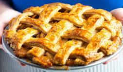

Apple Pie
This recipe is a family favorate! We love it. It comes with all the right ingredients and is easy to make
Make this recipe in only 1 hour!

Ingredients
- Apples: This recipe calls for eight small Granny Smith apples.
- Butter and flour: The filling starts with butter and all-purpose flour cooked into a paste.
- Sugars: A blend of white and brown sugar creates the perfect sweet flavor with a hint of warmth.
- Pie crust: Use a store-bought double crust pie pastry or make your own at home.
Instructions
- Make the filling: On the stove, make a paste with flour and butter. Add the sugar and water and bring to a
boil. Simmer, then remove from heat.
- Assemble the pie: Press one crust into a pie plate. Place the sliced apples on the bottom crust. Use the top
crust to make a lattice crust according to the recipe below. Pour the butter-sugar mixture over the lattice
crust.
- the pie: Bake the pie in a preheated oven until the apples are soft and the crust is golden brown.
home